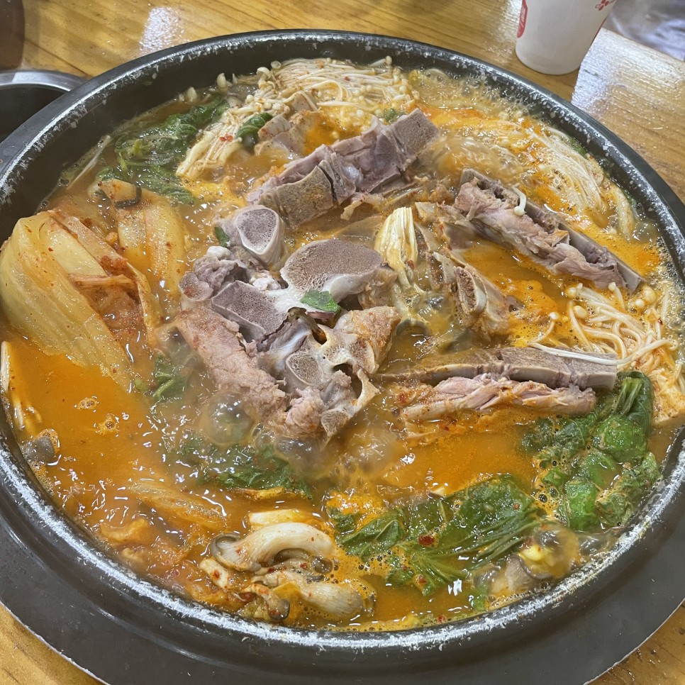

감자탕
돼지의 등뼈와 목뼈 부위를 이용하여 만드는 탕. 칼칼하면서도 매콤하고 약간 걸쭉한 국물이 포인트. 감자탕에서 감자를 빼고 조그만한 1인용 뚝배기에 담은 게 뼈해장국이다. 즉, 같은 요리지만 다인분으로 내놓으면 감자탕, 1인분으로 내놓으면 뼈해장국이 되는 식이다. 다만 감자탕은 가게 마다 감자가 있거나 없는 경우가 있지만, 뼈해장국은 아예 없다는 게 큰 차이점. 요즘 식당에서는 등뼈보다는 육질이 좋은 목뼈를 주로 사용한다. 목뼈는 등뼈 보다 가격은 더 나가지만, 맛이 더 좋고 등뼈보다 훨씬 부드럽기 때문이다.
감자탕의 기원에 대해서는 여러 가지 설이 있으나, 가장 유력한 설은 인천에서 유래했다는 것이다. 개항 시기인 1899년 경인선 철도공사 때 인부들 사이에 인기 있던 음식에서 나왔다는 설인데, 이를 뒷받침 하는 내용으로는 개항 이후 인천항을 출입하기 시작한 외항선들의 스테이크용 고기에 대한 수요로 인천에 대형 도축장까지 들어서게 됐는데, 이들이 살코기를 가져가고 나면 뼈 부위가 많이 남게 되고 이를 이용한 요리법이 발전하게 됐다는 것이다